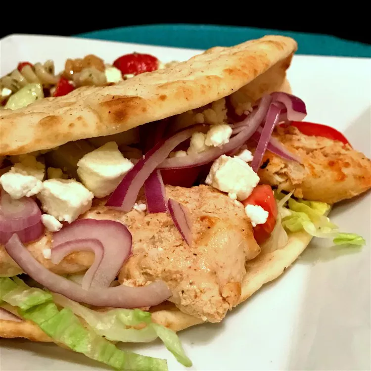

Chicken Shawarma Recipe

Description
Have you found a new love for chicken shawarma? Do you want to learn how to make this delicious dish from home?
Well look no further.
Everything you need to know about making a chicken shawarma from scratch is right here.
Many people have this idea that making a tasty chicken shawarma is hard and that they would rather just buy one
from a shop. But this couldn't be further from the truth.
This recipe will take you 30 - 40 minutes and will be the highlight food of the week.
Ingredients
- 1 cup plain yogurt
- 1/4 cup lemon juice
- 2 tablespoons olive oil
- 1 tablespoon tomato paste
- 3 cloves of garlic, minced
- 1 tablespoon ground cumin
- 1 teaspoon ground coriander
- 1/2 tablespoon red pepper flakes
- 2 pounds skinless, boneless chicken breasts, cut into 1/2-inch strips
Steps
- Whisk yogurt, lemon juice, olive oil, tomato paste, garlic, cumin, coriander, salt, pepper, and red pepper
flakes together in a bowl.
- Mix in chicken strips. Cover bowl with plastic wrap and place in the refrigerator
to marinate, 8 hours to overnight.
- Set oven rack about 6 inches from the heat source and preheat the oven's broiler.
- Remove chicken from the bowl and arrange in a single layer on a broiling pan. Discard excess marinade.
- Broil chicken, turning once, until juices run clear, about 10 minutes. An instant-read thermometer inserted
into the center should read at least 165 degrees F (74 degrees C).